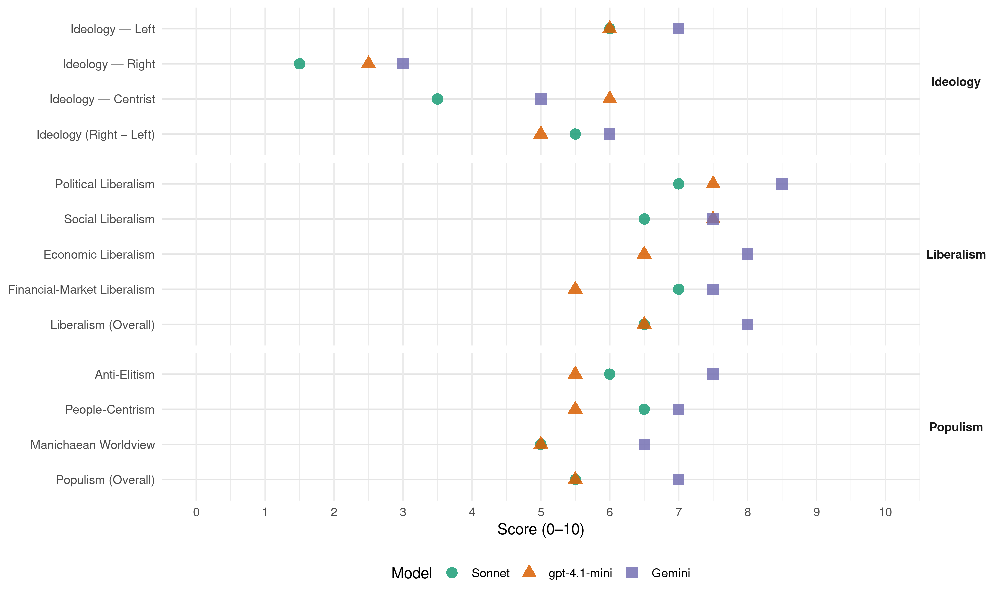

PRD (Panama, 2014)
manifesto_id 160321_201405
Get full text: This site shows derived annotations and short verbatim quotes only. The full manifesto text is © Manifesto Project / WZB — obtain it via manifesto-project.wzb.eu using the manifesto_id above.
Headline scores
| Dimension | Sonnet | gpt-4.1-mini | Gemini |
|---|---|---|---|
| Populism (Overall) | 5.5 | 5.5 | 7.0 |
| Anti-Elitism | 6.0 | 5.5 | 7.5 |
| People-Centrism | 6.5 | 5.5 | 7.0 |
| Manichaean Worldview | 5.0 | 5.0 | 6.5 |
| Ideology (Right − Left) | 5.5 | 5.0 | 6.0 |
| Liberalism (Overall) | 6.5 | 6.5 | 8.0 |
| Political Liberalism | 7.0 | 7.5 | 8.5 |
| Social Liberalism | 6.5 | 7.5 | 7.5 |
| Economic Liberalism | – | 6.5 | 8.0 |
| Financial-Market Liberalism | 7.0 | 5.5 | 7.5 |
Evidence per dimension
Economic Liberalism
Gemini · score 8.0 · verified · chunk 1
“acabar con los monopolios”
derechos de los consumidores y acabar con los monopolios, así como la fiscalización de
Gemini · score 8.0 · verified · chunk 2
“Promover la libre competencia en el sector”
de expansión del Canal de Panamá. METAS Promover la libre competencia en el sector marítimo, la eliminación de prácticas
gpt-4.1-mini · score 7.0 · verified · chunk 1
“El plan de todos privilegia la gente, al crecimiento económico, respeto al ambiente y cuidado de su biodiversidad”
El plan de todos privilegia la gente, al crecimiento económico, respeto al ambiente y cuidado de su biodiversidad;, apostar a una educación de calidad y en valores, el incremento de la producción de alimentos del agro para llevar del campo a la mesa alimentos frescos y de calidad; a la salud preventiva, al agua potable, viviendas dignas, para la Prevención Social; un transporte integral y eficiente, carreteras, caminos, puentes y vados para el desarrollo; a la masificación del deporte, la recreación y la cultura.
gpt-4.1-mini · score 6.0 · verified · chunk 2
“Promover la libre competencia en el sector marítimo, la eliminación de prácticas monopolísticas”
Promover la libre competencia en el sector marítimo, la eliminación de prácticas monopolísticas y la seguridad jurídica de las inversiones.
Sonnet · score 5.0 · mixed · chunk 1
“libre competencia en el sector marítimo, la eliminación de prácticas monopolísticas”
Promover la libre competencia en el sector marítimo, la eliminación de prácticas monopolísticas y la seguridad jurídica de las inversiones.
Sonnet · score 6.0 · mixed · chunk 2
“Promover la libre competencia en el sector marítimo”
METAS Promover la libre competencia en el sector marítimo, la eliminación de prácticas monopolísticas y la seguridad jurídica de las inversiones.
Financial-Market Liberalism
Gemini · score 7.0 · verified · chunk 1
“creación del Centro Bancario con alrededor”
la mega obra histórica del siglo XX hecha por todos incomparable con ninguna otra. Y desde el 2006, la decisión por referéndum de la ampliación del Canal. Asimismo, la construcción de las grandes hidroeléctricas de Bayano y Fortuna, la creación del Centro Bancario con alrededor de 100 bancos, instalaciones deportivas
Gemini · score 8.0 · verified · chunk 2
“Fortalecer las entidades reguladoras para que se prevenga”
en desventaja frente a otros países (campo de juego nivelado). Fortalecer las entidades reguladoras para que se prevenga evite el lavado de dinero
gpt-4.1-mini · score 4.0 · verified · chunk 1
“La deuda está duplicado más en 5 años que está administración que los 106 anteriores”
La deuda al 2014 (durante la administración Martinelli) habrá duplicado, pasando de 10802 en junio de 2009 a 22000 millones en el 2014. La deuda está duplicado más en 5 años que está administración que los 106 anteriores. Desde el 2009, todos los balances han mostrado saldos negativos de manera creciente. En los últimos años se ha sobrepasado las metas establecidas en la ley 34 sobre Responsabilidad Social fiscal.
gpt-4.1-mini · score 7.0 · verified · chunk 2
“Fortalecer las entidades reguladoras para que se prevenga evite el lavado de dinero”
Fortalecer las entidades reguladoras para que se prevenga evite el lavado de dinero y el mal uso de los servicios (superintendencia de Bancos, valores, seguros y otros).
Sonnet · score 5.0 · mixed · chunk 1
“0% interés para la compra a través de la banca agropecuaria”
Implementar el Plan Triple 0, qué consiste en 0% de interés para préstamos agropecuarios, 0% impuesto sobre la renta para pequeños y medianos productores, hasta un millón de ingresos anuales, 0% interés para la compra a través de la banca agropecuaria del BNP
Sonnet · score 7.0 · verified · chunk 2
“Fortalecer las entidades reguladoras para que se prevenga evite el lavado de dinero”
Fortalecer las entidades reguladoras para que se prevenga evite el lavado de dinero y el mal uso de los servicios (superintendencia de Bancos, valores, seguros y otros).
Political Liberalism
Gemini · score 9.0 · verified · chunk 1
“vulnerene la división entre los poderes”
defensa de la democracia, donde no se vulnere la división entre los poderes del Estado y no hay injerencias del
Gemini · score 8.0 · verified · chunk 2
“respetar el estado de derecho y la institucionalidad democrática”
es fundamental que se respete el estado de derecho y la institucionalidad democrática establecida en nuestra Constitución Política
gpt-4.1-mini · score 8.0 · verified · chunk 1
“defensa de la democracia, donde no se vulnere la división entre los poderes del Estado y no hay injerencias del Ejecutivo en la Asamblea Nacional y el órgano judicial”
Asimismo, el plan de todos es una defensa de la democracia, donde no se vulnere la división entre los poderes del Estado y no hay injerencias del Ejecutivo en la Asamblea Nacional y el órgano judicial; donde el Procurador General de la Nación tenga plena independencia y no sea un empleado o empleada dócil del gobernante de turno, como tampoco debe serlo la Contraloría General de la República. Es absolutamente necesario que Panamá tenga un gobierno honesto, eficiente, de trabajo incansable, de respeto a la Constitución, las leyes y normas.
gpt-4.1-mini · score 7.0 · verified · chunk 2
“respeto al estado de derecho y la institucionalidad democrática establecida”
los trabajadores organizados del país consideran que es fundamental que se respete el estado de derecho y la institucionalidad democrática establecida en nuestra Constitución Política y la Declaración Universal de los Derechos Humanos.
Sonnet · score 6.0 · verified · chunk 1
“defensa de la democracia, donde no se vulnere la división”
el plan de todos es una defensa de la democracia, donde no se vulnere la división entre los poderes del Estado y no hay injerencias del Ejecutivo en la Asamblea Nacional
Sonnet · score 8.0 · verified · chunk 2
“Promover un órgano judicial totalmente independiente autónomo”
5.2. JUSTICIA Promover un órgano judicial totalmente independiente autónomo e imparcial. Impulsar los acuerdos del Pacto de Estado por la justicia.
Liberalism (Overall)
Gemini · score 8.0 · verified · chunk 1
“vulnerene la división entre los poderes”
defensa de la democracia, donde no se vulnere la división entre los poderes del Estado y no hay injerencias del
Gemini · score 8.0 · verified · chunk 2
“respetar el estado de derecho y la institucionalidad democrática”
es fundamental que se respete el estado de derecho y la institucionalidad democrática establecida en nuestra Constitución Política
gpt-4.1-mini · score 7.0 · verified · chunk 1
“defensa de la democracia, donde no se vulnere la división entre los poderes del Estado y no hay injerencias del Ejecutivo en la Asamblea Nacional y el órgano judicial”
Asimismo, el plan de todos es una defensa de la democracia, donde no se vulnere la división entre los poderes del Estado y no hay injerencias del Ejecutivo en la Asamblea Nacional y el órgano judicial; donde el Procurador General de la Nación tenga plena independencia y no sea un empleado o empleada dócil del gobernante de turno, como tampoco debe serlo la Contraloría General de la República. Es absolutamente necesario que Panamá tenga un gobierno honesto, eficiente, de trabajo incansable, de respeto a la Constitución, las leyes y normas.
gpt-4.1-mini · score 6.0 · verified · chunk 2
“respeto al estado de derecho y la institucionalidad democrática establecida”
los trabajadores organizados del país consideran que es fundamental que se respete el estado de derecho y la institucionalidad democrática establecida en nuestra Constitución Política y la Declaración Universal de los Derechos Humanos.
Sonnet · score 6.0 · verified · chunk 1
“defensa de la democracia, donde no se vulnere la división”
el plan de todos es una defensa de la democracia, donde no se vulnere la división entre los poderes del Estado y no hay injerencias del Ejecutivo en la Asamblea Nacional
Sonnet · score 7.0 · verified · chunk 2
“respetando la seguridad jurídica y respetando nuestro modelo”
El gobierno tiene que volver a su rol de regulador fuerte pero sobre todo garante de que reglas claras y transparentes para el inversionista, respetando la seguridad jurídica y respetando nuestro modelo
Anti-Elitism
Gemini · score 8.0 · verified · chunk 1
“la corrupción, la rapiña, la transgresión”
Ello contrasta con el del gobierno, la corrupción, la rapiña, la transgresión de las leyes y la violación a la Constitución
Gemini · score 7.0 · verified · chunk 2
“La corrupción generalizada en la mayoría”
DEFENSA A LA DEMOCRACIA La corrupción generalizada en la mayoría de las instituciones panameña, es parte de la
gpt-4.1-mini · score 8.0 · verified · chunk 1
“se han convertido el ejercicio público en un dominio privado y un botín, al margen y en contra del pueblo”
una alianza de fuerzas interesadas en un país mejor y de todos, amplia y de compromiso, específicamente de acuerdo a nuestra idiosincrasia e identidad - a la panameña- acercamientos y entendimiento sociales, que genere reglas claras de convivencia, de ley y orden y sobre todo justo. El plan de todos es el único de los planes de gobierno que se construyó de abajo hacia arriba, mediante la consulta y la participación de la gente. Este plan se hizo con la gente; para garantizar una gestión caracterizada por la transparencia, la decencia y la solidaridad. Más de 1000 profesionales, especialistas, campesinos, mujeres, jóvenes, presentaron en 35 mesas temáticas ideas, propuestas y alternativas para mejorar la calidad de vida de la población. Es el principio torrijista. Nadie puede gobernar bien el país sino consulta a la gente. Está probado : “ El que más consulta menos se equivoca”. En esta amplia consulta ciudadana donde participaron más de 5 mil personas, en busca de consensos y denominadores comunes, participaron miembros de nuestro partido, organizaciones representativas de la sociedad civil, productores, empresarios, dirigentes gremiales, docentes de todos los niveles, profesionales de las más diversas disciplinas, dirigentes comarcales, marginales-urbanos y campesinos. También compartieron esta consulta, comunicadores sociales, ambientalistas, mujeres y jóvenes, personas con discapacidad, escritores, artistas y deportistas. Y hasta adversarios políticos. Aprovechando las nuevas tecnologías se recibieron cientos de ideas que hoy son parte del Plan de Todos. Es una propuesta responsabilidad compartida entre el próximo gobierno del PSOE de sociedad donde prima el interés de la mayoría sobre cualquier interés particular o ambiciones desenfrenada, se han convertido el ejercicio público en un dominio privado y un botín, al margen y en contra del pueblo. Los beneficios del crecimiento económico de los últimos 10 años son resultado de las políticas acertadas, acciones y decisiones del gobierno perredista, no han llegado, y tienen que llegar a los que viven en extrema pobreza, la pobreza, mujeres, jóvenes, clase media, trabajadores y los profesionales.
gpt-4.1-mini · score 3.0 · verified · chunk 2
“la corrupción generalizada en la mayoría de las instituciones panameña”
La corrupción generalizada en la mayoría de las instituciones panameña, es parte de la cultura del juego vivo que muchas personas al estar enfrente un acto de corrupción ni siquiera lo consideran así, si no como un estilo de vida normal, muchas veces aceptado por el entorno.
Sonnet · score 7.0 · verified · chunk 1
“se han convertido el ejercicio público en un dominio privado y un botín”
prima el interés de la mayoría sobre cualquier interés particular o ambiciones desenfrenada, se han convertido el ejercicio público en un dominio privado y un botín, al margen y en contra del pueblo.
Sonnet · score 5.0 · verified · chunk 2
“corrupción generalizada en la mayoría de las instituciones panameña”
DEFENSA A LA DEMOCRACIA La corrupción generalizada en la mayoría de las instituciones panameña, es parte de la cultura del juego vivo
Ideology — Centrist
Gemini · score 5.0 · verified · chunk 1
“un gobierno con la gente”
diseñado como una ruta para promover un gobierno con la gente basado en 6 pilares de acción
gpt-4.1-mini · score 7.0 · verified · chunk 1
“El Plan de Todos, es el único de los planes de gobierno que se construyó de abajo hacia arriba, mediante la consulta y la participación de la gente”
Es un proyecto de país, una visión y una ruta de construcción nacional compartida. La construcción del Plan de Todos, propuesta del Partido Revolucionario Democrático, es el resultado de una amplia y minuciosa consulta. Hubo consulta, hay consulta y habrá consulta. Ese es el estilo del PRD de Omar. El Plan de Todos, es el único de los planes de gobierno que se construyó de abajo hacia arriba, mediante la consulta y la participación de la gente. Este plan se hizo con la gente; para garantizar una gestión caracterizada por la transparencia, la decencia y la solidaridad. Más de 1000 profesionales, especialistas, campesinos, mujeres, jóvenes, presentaron en 35 mesas temáticas ideas, propuestas y alternativas para mejorar la calidad de vida de la población.
gpt-4.1-mini · score 5.0 · verified · chunk 2
“consultas necesarias para presentarlas en los primeros 18 meses”
Se consultará para lograr consenso sobre las reformas a la Constitución. Una comisión partidos políticos independientes realizará las consultas necesarias para presentarlas en los primeros 18 meses.
Sonnet · score 3.0 · verified · chunk 1
“construir el más amplio consenso social”
El plan de todos propone construir el más amplio consenso social, que le dé prosperidad, tranquilidad y seguridad al país de todos.
Sonnet · score 4.0 · verified · chunk 2
“sagrado deber del gobierno de garantizar los mejores precios”
obedece al sagrado deber del gobierno de garantizar los mejores precios y el mejor servicio para los ciudadanos.
Ideology — Left
Gemini · score 8.0 · verified · chunk 1
“riquezas no se distribuyen equitativamente”
obras de concreto y asfalto con sobrecosto. Pero también sabe muy bien que la riquezas no se distribuyen equitativamente. Unas ganas demasiado y muchas
Gemini · score 6.0 · verified · chunk 2
“intereses de los trabajadores panameños”
Desarrollo Laboral volver a ser una institución que vela por los intereses de los trabajadores panameños. Respetaremos el Código del Trabajo
gpt-4.1-mini · score 8.0 · verified · chunk 1
“Los beneficios del crecimiento económico de los últimos 10 años son resultado de las políticas acertadas, acciones y decisiones del gobierno perredista, no han llegado, y tienen que llegar a los que viven en extrema pobreza”
una alianza de fuerzas interesadas en un país mejor y de todos, amplia y de compromiso, específicamente de acuerdo a nuestra idiosincrasia e identidad - a la panameña- acercamientos y entendimiento sociales, que genere reglas claras de convivencia, de ley y orden y sobre todo justo. El plan de todos es el único de los planes de gobierno que se construyó de abajo hacia arriba, mediante la consulta y la participación de la gente. Este plan se hizo con la gente; para garantizar una gestión caracterizada por la transparencia, la decencia y la solidaridad. Más de 1000 profesionales, especialistas, campesinos, mujeres, jóvenes, presentaron en 35 mesas temáticas ideas, propuestas y alternativas para mejorar la calidad de vida de la población. Es el principio torrijista. Nadie puede gobernar bien el país sino consulta a la gente. Está probado : “ El que más consulta menos se equivoca”. En esta amplia consulta ciudadana donde participaron más de 5 mil personas, en busca de consensos y denominadores comunes, participaron miembros de nuestro partido, organizaciones representativas de la sociedad civil, productores, empresarios, dirigentes gremiales, docentes de todos los niveles, profesionales de las más diversas disciplinas, dirigentes comarcales, marginales-urbanos y campesinos. También compartieron esta consulta, comunicadores sociales, ambientalistas, mujeres y jóvenes, personas con discapacidad, escritores, artistas y deportistas. Y hasta adversarios políticos. Aprovechando las nuevas tecnologías se recibieron cientos de ideas que hoy son parte del Plan de Todos. Es una propuesta responsabilidad compartida entre el próximo gobierno del PSOE de sociedad donde prima el interés de la mayoría sobre cualquier interés particular o ambiciones desenfrenada, se han convertido el ejercicio público en un dominio privado y un botín, al margen y en contra del pueblo. Los beneficios del crecimiento económico de los últimos 10 años son resultado de las políticas acertadas, acciones y decisiones del gobierno perredista, no han llegado, y tienen que llegar a los que viven en extrema pobreza, la pobreza, mujeres, jóvenes, clase media, trabajadores y los profesionales.
gpt-4.1-mini · score 4.0 · verified · chunk 2
“Disminuir 10% el precio de los principales productos de la canasta básica”
Disminuir 10% el precio de los principales productos de la canasta básica mediante la reducción de intermediarios y tratando a la gente como gente.
Sonnet · score 7.0 · verified · chunk 1
“la riquezas no se distribuyen equitativamente”
El pueblo sabe que Panamá es un país rico. De millones y billones, obras de concreto y asfalto con sobrecosto. Pero también sabe muy bien que la riquezas no se distribuyen equitativamente.
Sonnet · score 5.0 · verified · chunk 2
“Promover el aumento de salarios ingresos para todos los trabajadores”
METAS Promover el aumento de salarios ingresos para todos los trabajadores a través del fomento al desarrollo del trabajador panameño.
Ideology (Right − Left)
Gemini · score 7.0 · verified · chunk 1
“riquezas no se distribuyen equitativamente”
obras de concreto y asfalto con sobrecosto. Pero también sabe muy bien que la riquezas no se distribuyen equitativamente. Unas ganas demasiado y muchas
Gemini · score 5.0 · verified · chunk 2
“intereses de los trabajadores panameños”
Desarrollo Laboral volver a ser una institución que vela por los intereses de los trabajadores panameños. Respetaremos el Código del Trabajo
gpt-4.1-mini · score 6.0 · verified · chunk 1
“restringiendo la inmigración ilegal”
MIGRACIÓN Política migratoria: Regularizar extranjeros ingresados antes del 2014, restringiendo la inmigración ilegal. Promover migración estratégica de empresarios, profesionales, entrenadores, deportistas, científicos y otros.
gpt-4.1-mini · score 4.0 · verified · chunk 2
“la corrupción generalizada en la mayoría de las instituciones panameña”
La corrupción generalizada en la mayoría de las instituciones panameña, es parte de la cultura del juego vivo que muchas personas al estar enfrente un acto de corrupción ni siquiera lo consideran así, si no como un estilo de vida normal, muchas veces aceptado por el entorno.
Sonnet · score 7.0 · verified · chunk 1
“cruzada por la equidad y justicia social”
Esto es una cruzada por la equidad y justicia social, a la cual el PRD de convocados del pueblo.
Sonnet · score 4.0 · verified · chunk 2
“Respetaremos el Código del Trabajo como un desarrollo con paz y justicia social”
Respetaremos el Código del Trabajo como un desarrollo con paz y justicia social. Facilitaremos la entrada de los más de 400 mil informales
Ideology — Right
Gemini · score 3.0 · verified · chunk 1
“restringiendo la inmigración ilegal”
Regularizar extranjeros ingresados antes del 2014, restringiendo la inmigración ilegal. Promover migración estratégica de
gpt-4.1-mini · score 3.0 · verified · chunk 1
“restringiendo la inmigración ilegal”
MIGRACIÓN Política migratoria: Regularizar extranjeros ingresados antes del 2014, restringiendo la inmigración ilegal. Promover migración estratégica de empresarios, profesionales, entrenadores, deportistas, científicos y otros.
gpt-4.1-mini · score 2.0 · verified · chunk 2
“actualizar la legislación y las normas migratorias vigentes para liberar las de restricciones racistas”
Actualizar la legislación y las normas migratorias vigentes para liberar las de restricciones racistas y de época de la Guerra Fría, y de facilitar el ingreso al país de personas que vengan a contribuir al desarrollo científico, tecnológico,cultural y deportivo.
Sonnet · score 2.0 · verified · chunk 1
“Regularizar extranjeros ingresados antes del 2014, restringiendo la inmigración ilegal”
MIGRACIÓN Política migratoria: Regularizar extranjeros ingresados antes del 2014, restringiendo la inmigración ilegal. Promover migración estratégica de empresarios, profesionales
Sonnet · score 1.0 · verified · chunk 2
“Actualizar la legislación y las normas migratorias vigentes”
Actualizar la legislación y las normas migratorias vigentes para liberar las de restricciones racistas y de época de la Guerra Fría
Manichaean Worldview
Gemini · score 7.0 · verified · chunk 1
“en contra del pueblo”
ejercicio público en un dominio privado y un botín, al margen y en contra del pueblo. Los beneficios del crecimiento
Gemini · score 6.0 · verified · chunk 2
“bolsillos de los corruptos es inaceptable”
desvío anual de recursos del Estado bolsillos de los corruptos es inaceptable. En este sentido, el sector privado también
gpt-4.1-mini · score 7.0 · verified · chunk 1
“un gobierno que respeta la dignidad de la población, que insulta y desprecia, qué rompió todos los límites de sensatez y que nada en un mar de arbitrariedades”
Dejaremos atrás el reciente pasado de este quinquenio regido por un gobierno que respeta la dignidad de la población, que insulta y desprecia, qué rompió todos los límites de sensatez y que nada en un mar de arbitrariedades y sin rendir cuentas de sus actos. Ese modelo de gobierno estético, ni solidario, ni generoso ni humano debe ser reemplazado antes de que le haga más daño a la nación.
gpt-4.1-mini · score 3.0 · verified · chunk 2
“es robarle a los pobres”
CORRUPCIÓN… es robarle a los pobres. De acuerdo al Barómetro de las Américas, Panamá se sitúa en un lugar de alta percepción de la corrupción, con un 78% de los ciudadanos que piensan que la corrupción en los servidores públicos es muy generalizada.
Sonnet · score 6.0 · verified · chunk 1
“la corrupción, la rapiña, la transgresión de las leyes”
Ello contrasta con el del gobierno, la corrupción, la rapiña, la transgresión de las leyes y la violación a la Constitución, ejercida por los que están enquistados en el poder
Sonnet · score 4.0 · verified · chunk 2
“corrupción… es robarle a los pobres”
5.3. CORRUPCIÓN… es robarle a los pobres. De acuerdo al Barómetro de las Américas, Panamá se sitúa en un lugar de alta percepción de la corrupción
People-Centrism
Gemini · score 9.0 · verified · chunk 1
“EL VERDADERO PROTAGONISTA ES EL PUEBLO”
El Plan de Todos es una agenda para la vida y no para los negociados. EL VERDADERO PROTAGONISTA ES EL PUEBLO PANAMEÑO La construcción de un nuevo
Gemini · score 5.0 · verified · chunk 2
“tratar a la gente como gente”
canasta básica mediante la reducción de intermediarios y tratando a la gente como gente. No más largas filas bajo el sol
gpt-4.1-mini · score 9.0 · verified · chunk 1
“El Plan de Todos, es el único de los planes de gobierno que se construyó de abajo hacia arriba, mediante la consulta y la participación de la gente”
Es un proyecto de país, una visión y una ruta de construcción nacional compartida. La construcción del Plan de Todos, propuesta del Partido Revolucionario Democrático, es el resultado de una amplia y minuciosa consulta. Hubo consulta, hay consulta y habrá consulta. Ese es el estilo del PRD de Omar. El Plan de Todos, es el único de los planes de gobierno que se construyó de abajo hacia arriba, mediante la consulta y la participación de la gente. Este plan se hizo con la gente; para garantizar una gestión caracterizada por la transparencia, la decencia y la solidaridad. Más de 1000 profesionales, especialistas, campesinos, mujeres, jóvenes, presentaron en 35 mesas temáticas ideas, propuestas y alternativas para mejorar la calidad de vida de la población.
gpt-4.1-mini · score 2.0 · verified · chunk 2
“tratar a la gente como gente”
Disminuir 10% el precio de los principales productos de la canasta básica mediante la reducción de intermediarios y tratando a la gente como gente. No más largas filas bajo el sol y la lluvia.
Sonnet · score 8.0 · verified · chunk 1
“EL VERDADERO PROTAGONISTA ES EL PUEBLO PANAMEÑO”
El Plan de Todos es una agenda para la vida y no para los negociados. EL VERDADERO PROTAGONISTA ES EL PUEBLO PANAMEÑO La construcción de un nuevo Panamá requiere saber de dónde venimos
Sonnet · score 5.0 · verified · chunk 2
“los panameños de diferentes áreas han estado reclamando”
Durante años, los panameños de diferentes áreas han estado reclamando más espacios de decisión y mayores recursos para financiar su desarrollo.
Populism (Overall)
Gemini · score 8.0 · verified · chunk 1
“EL VERDADERO PROTAGONISTA ES EL PUEBLO”
El Plan de Todos es una agenda para la vida y no para los negociados. EL VERDADERO PROTAGONISTA ES EL PUEBLO PANAMEÑO La construcción de un nuevo
Gemini · score 6.0 · verified · chunk 2
“La corrupción generalizada en la mayoría”
DEFENSA A LA DEMOCRACIA La corrupción generalizada en la mayoría de las instituciones panameña, es parte de la
gpt-4.1-mini · score 8.0 · verified · chunk 1
“se han convertido el ejercicio público en un dominio privado y un botín, al margen y en contra del pueblo”
una alianza de fuerzas interesadas en un país mejor y de todos, amplia y de compromiso, específicamente de acuerdo a nuestra idiosincrasia e identidad - a la panameña- acercamientos y entendimiento sociales, que genere reglas claras de convivencia, de ley y orden y sobre todo justo. El plan de todos es el único de los planes de gobierno que se construyó de abajo hacia arriba, mediante la consulta y la participación de la gente. Este plan se hizo con la gente; para garantizar una gestión caracterizada por la transparencia, la decencia y la solidaridad. Más de 1000 profesionales, especialistas, campesinos, mujeres, jóvenes, presentaron en 35 mesas temáticas ideas, propuestas y alternativas para mejorar la calidad de vida de la población. Es el principio torrijista. Nadie puede gobernar bien el país sino consulta a la gente. Está probado : “ El que más consulta menos se equivoca”. En esta amplia consulta ciudadana donde participaron más de 5 mil personas, en busca de consensos y denominadores comunes, participaron miembros de nuestro partido, organizaciones representativas de la sociedad civil, productores, empresarios, dirigentes gremiales, docentes de todos los niveles, profesionales de las más diversas disciplinas, dirigentes comarcales, marginales-urbanos y campesinos. También compartieron esta consulta, comunicadores sociales, ambientalistas, mujeres y jóvenes, personas con discapacidad, escritores, artistas y deportistas. Y hasta adversarios políticos. Aprovechando las nuevas tecnologías se recibieron cientos de ideas que hoy son parte del Plan de Todos. Es una propuesta responsabilidad compartida entre el próximo gobierno del PSOE de sociedad donde prima el interés de la mayoría sobre cualquier interés particular o ambiciones desenfrenada, se han convertido el ejercicio público en un dominio privado y un botín, al margen y en contra del pueblo. Los beneficios del crecimiento económico de los últimos 10 años son resultado de las políticas acertadas, acciones y decisiones del gobierno perredista, no han llegado, y tienen que llegar a los que viven en extrema pobreza, la pobreza, mujeres, jóvenes, clase media, trabajadores y los profesionales.
gpt-4.1-mini · score 3.0 · verified · chunk 2
“la corrupción generalizada en la mayoría de las instituciones panameña”
La corrupción generalizada en la mayoría de las instituciones panameña, es parte de la cultura del juego vivo que muchas personas al estar enfrente un acto de corrupción ni siquiera lo consideran así, si no como un estilo de vida normal, muchas veces aceptado por el entorno.
Sonnet · score 7.0 · verified · chunk 1
“el interés de la mayoría sobre cualquier interés particular”
Es una propuesta responsabilidad compartida entre el próximo gobierno del PSOE de sociedad donde prima el interés de la mayoría sobre cualquier interés particular o ambiciones desenfrenada
Sonnet · score 4.0 · verified · chunk 2
“El desvío anual de recursos del Estado bolsillos de los corruptos”
El desvío anual de recursos del Estado bolsillos de los corruptos es inaceptable. En este sentido, el sector privado también tiene responsabilidad.
Social Liberalism